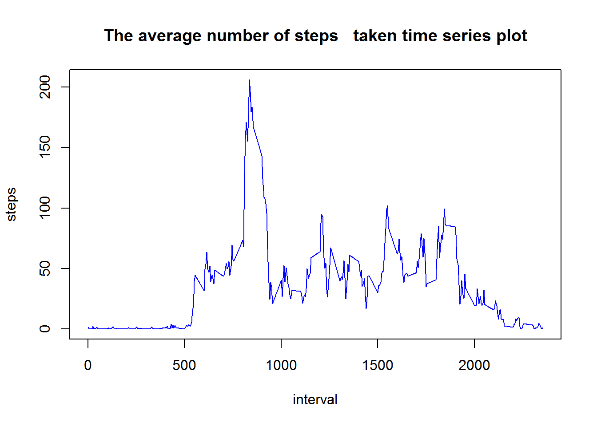
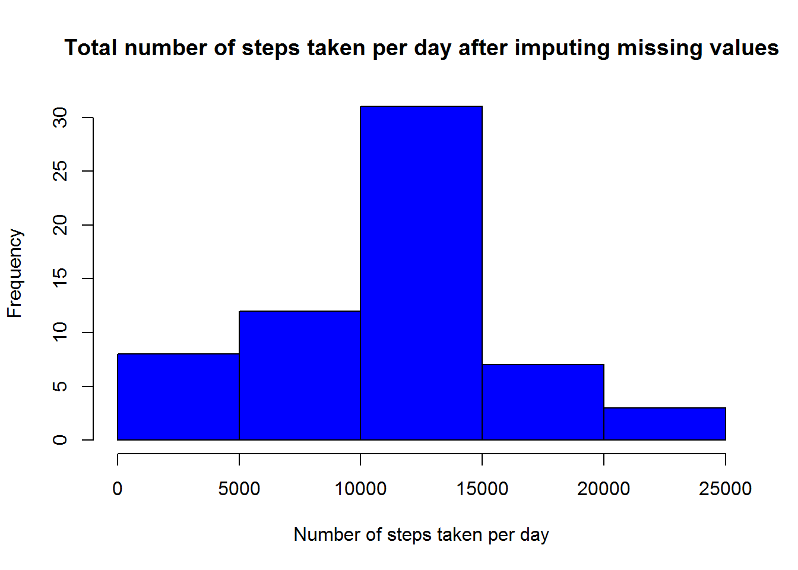
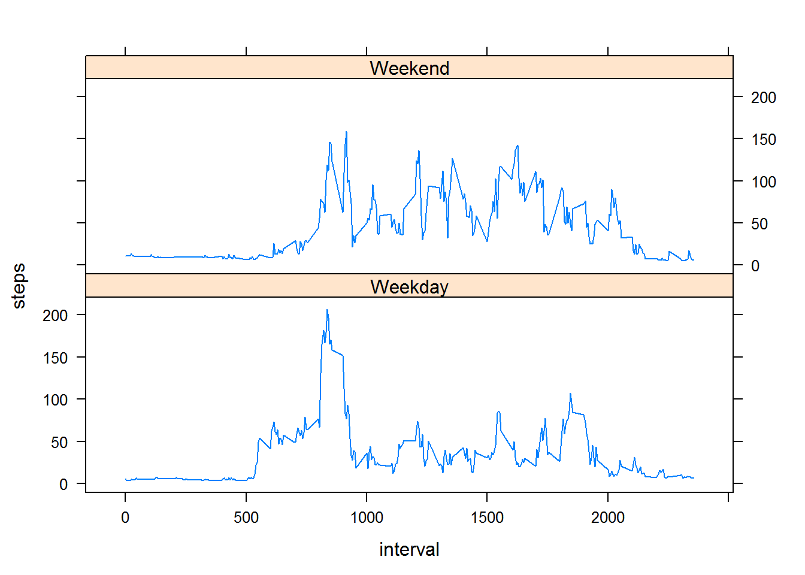

Loading and preprocessing the data The data is loaded into object “activity”. Data is clean and is of short size. Any further processing is not required. Some graphs are plotted using lattice function. Hence library lattice is loaded.
library(lattice)
activity <- read.csv("activity.csv")Total number of steps per day are taken using aggregate function, and stored in a variable “activity.sum”. Only the columns date and steps are selected. The result for the steps need not be shown. A histogram is presented for the total number of steps per day
activity.sum <- aggregate(. ~ date, activity[, 1:2], FUN = sum, na.rm = T)
hist(activity.sum$step, col = "blue", main = "Total number of steps taken per day"
, xlab = "Number of steps taken per day")The mean of total number of steps taken per day is calculated using the aggregate function. There is no need to store the answer in a variable. The result is directly displayed.
aggregate(. ~ date, activity[, 1:2], FUN = mean, na.rm = T)## date steps
## 1 2012-10-02 0.4375000
## 2 2012-10-03 39.4166667
## 3 2012-10-04 42.0694444
## 4 2012-10-05 46.1597222
## 5 2012-10-06 53.5416667
## 6 2012-10-07 38.2465278
## 7 2012-10-09 44.4826389
## 8 2012-10-10 34.3750000
## 9 2012-10-11 35.7777778
## 10 2012-10-12 60.3541667
## 11 2012-10-13 43.1458333
## 12 2012-10-14 52.4236111
## 13 2012-10-15 35.2048611
## 14 2012-10-16 52.3750000
## 15 2012-10-17 46.7083333
## 16 2012-10-18 34.9166667
## 17 2012-10-19 41.0729167
## 18 2012-10-20 36.0937500
## 19 2012-10-21 30.6284722
## 20 2012-10-22 46.7361111
## 21 2012-10-23 30.9652778
## 22 2012-10-24 29.0104167
## 23 2012-10-25 8.6527778
## 24 2012-10-26 23.5347222
## 25 2012-10-27 35.1354167
## 26 2012-10-28 39.7847222
## 27 2012-10-29 17.4236111
## 28 2012-10-30 34.0937500
## 29 2012-10-31 53.5208333
## 30 2012-11-02 36.8055556
## 31 2012-11-03 36.7048611
## 32 2012-11-05 36.2465278
## 33 2012-11-06 28.9375000
## 34 2012-11-07 44.7326389
## 35 2012-11-08 11.1770833
## 36 2012-11-11 43.7777778
## 37 2012-11-12 37.3784722
## 38 2012-11-13 25.4722222
## 39 2012-11-15 0.1423611
## 40 2012-11-16 18.8923611
## 41 2012-11-17 49.7881944
## 42 2012-11-18 52.4652778
## 43 2012-11-19 30.6979167
## 44 2012-11-20 15.5277778
## 45 2012-11-21 44.3993056
## 46 2012-11-22 70.9270833
## 47 2012-11-23 73.5902778
## 48 2012-11-24 50.2708333
## 49 2012-11-25 41.0902778
## 50 2012-11-26 38.7569444
## 51 2012-11-27 47.3819444
## 52 2012-11-28 35.3576389
## 53 2012-11-29 24.4687500The median is also calculated using the same.
aggregate(. ~ date, activity[, 1:2], FUN = median, na.rm = T)## date steps
## 1 2012-10-02 0
## 2 2012-10-03 0
## 3 2012-10-04 0
## 4 2012-10-05 0
## 5 2012-10-06 0
## 6 2012-10-07 0
## 7 2012-10-09 0
## 8 2012-10-10 0
## 9 2012-10-11 0
## 10 2012-10-12 0
## 11 2012-10-13 0
## 12 2012-10-14 0
## 13 2012-10-15 0
## 14 2012-10-16 0
## 15 2012-10-17 0
## 16 2012-10-18 0
## 17 2012-10-19 0
## 18 2012-10-20 0
## 19 2012-10-21 0
## 20 2012-10-22 0
## 21 2012-10-23 0
## 22 2012-10-24 0
## 23 2012-10-25 0
## 24 2012-10-26 0
## 25 2012-10-27 0
## 26 2012-10-28 0
## 27 2012-10-29 0
## 28 2012-10-30 0
## 29 2012-10-31 0
## 30 2012-11-02 0
## 31 2012-11-03 0
## 32 2012-11-05 0
## 33 2012-11-06 0
## 34 2012-11-07 0
## 35 2012-11-08 0
## 36 2012-11-11 0
## 37 2012-11-12 0
## 38 2012-11-13 0
## 39 2012-11-15 0
## 40 2012-11-16 0
## 41 2012-11-17 0
## 42 2012-11-18 0
## 43 2012-11-19 0
## 44 2012-11-20 0
## 45 2012-11-21 0
## 46 2012-11-22 0
## 47 2012-11-23 0
## 48 2012-11-24 0
## 49 2012-11-25 0
## 50 2012-11-26 0
## 51 2012-11-27 0
## 52 2012-11-28 0
## 53 2012-11-29 0A time series plot of the 5-minute interval against the average number of steps taken is presented.
activity.imean <- aggregate(. ~ interval, activity[, c(1,3)],
FUN = mean, na.rm = T)
plot(activity.imean, type = "l", col = "blue", main = "The average number of steps taken time series plot")
This is found out by ordering the previous data frame in descending order. The time interval that has on average the most number of steps is 835th interval.
max <- activity.imean[order(activity.imean[2], decreasing = T), ]
head(max, 1)## interval steps
## 104 835 206.1698The total number of missing value are
sum(is.na(activity))## [1] 2304A data frame is created using only the NA values. This dataset has 2304 rows same as the number of NA values. A logical matrix is created which holds the logical NA values of the origianl data frame. Data frame used to plot the time series is merged with the NA data frame. The result is a data frame that contains in one column only the NA values and another row the mean values for the respective days.
activity.na <- activity[is.na(activity$steps), ]
na.count <- is.na(activity)
activity.new <- activity
mean.complete <- merge(activity.imean, activity.na, by = "interval")
complete.final <- mean.complete[, c(2, 4)]A new data set is created by replacing all the NA values in the original data frame with the mean of 5-minute interval. All the 5-minute intervals have atleast one recorded step value. This is not true in case of daily mean values of steps taken.
activity.new[na.count] <- mean.complete[, 2]activity.sum1 <- aggregate(. ~ date, activity.new[, 1:2], FUN = sum, na.rm = T)
hist(activity.sum1$step, col = "blue", main = "Total number of steps taken per day after imputing missing values"
, xlab = "Number of steps taken per day")
Mean value for the filled data set
aggregate(. ~ date, activity.new[, 1:2], FUN = mean, na.rm = T)## date steps
## 1 2012-10-01 0.4779874
## 2 2012-10-02 0.4375000
## 3 2012-10-03 39.4166667
## 4 2012-10-04 42.0694444
## 5 2012-10-05 46.1597222
## 6 2012-10-06 53.5416667
## 7 2012-10-07 38.2465278
## 8 2012-10-08 4.4963312
## 9 2012-10-09 44.4826389
## 10 2012-10-10 34.3750000
## 11 2012-10-11 35.7777778
## 12 2012-10-12 60.3541667
## 13 2012-10-13 43.1458333
## 14 2012-10-14 52.4236111
## 15 2012-10-15 35.2048611
## 16 2012-10-16 52.3750000
## 17 2012-10-17 46.7083333
## 18 2012-10-18 34.9166667
## 19 2012-10-19 41.0729167
## 20 2012-10-20 36.0937500
## 21 2012-10-21 30.6284722
## 22 2012-10-22 46.7361111
## 23 2012-10-23 30.9652778
## 24 2012-10-24 29.0104167
## 25 2012-10-25 8.6527778
## 26 2012-10-26 23.5347222
## 27 2012-10-27 35.1354167
## 28 2012-10-28 39.7847222
## 29 2012-10-29 17.4236111
## 30 2012-10-30 34.0937500
## 31 2012-10-31 53.5208333
## 32 2012-11-01 84.8747379
## 33 2012-11-02 36.8055556
## 34 2012-11-03 36.7048611
## 35 2012-11-04 50.2101677
## 36 2012-11-05 36.2465278
## 37 2012-11-06 28.9375000
## 38 2012-11-07 44.7326389
## 39 2012-11-08 11.1770833
## 40 2012-11-09 47.9968553
## 41 2012-11-10 57.1472746
## 42 2012-11-11 43.7777778
## 43 2012-11-12 37.3784722
## 44 2012-11-13 25.4722222
## 45 2012-11-14 47.4842767
## 46 2012-11-15 0.1423611
## 47 2012-11-16 18.8923611
## 48 2012-11-17 49.7881944
## 49 2012-11-18 52.4652778
## 50 2012-11-19 30.6979167
## 51 2012-11-20 15.5277778
## 52 2012-11-21 44.3993056
## 53 2012-11-22 70.9270833
## 54 2012-11-23 73.5902778
## 55 2012-11-24 50.2708333
## 56 2012-11-25 41.0902778
## 57 2012-11-26 38.7569444
## 58 2012-11-27 47.3819444
## 59 2012-11-28 35.3576389
## 60 2012-11-29 24.4687500
## 61 2012-11-30 6.3731656Median value for the filled data set
aggregate(. ~ date, activity.new[, 1:2]
, FUN = median, na.rm = T)## date steps
## 1 2012-10-01 0.1981132
## 2 2012-10-02 0.0000000
## 3 2012-10-03 0.0000000
## 4 2012-10-04 0.0000000
## 5 2012-10-05 0.0000000
## 6 2012-10-06 0.0000000
## 7 2012-10-07 0.0000000
## 8 2012-10-08 1.0283019
## 9 2012-10-09 0.0000000
## 10 2012-10-10 0.0000000
## 11 2012-10-11 0.0000000
## 12 2012-10-12 0.0000000
## 13 2012-10-13 0.0000000
## 14 2012-10-14 0.0000000
## 15 2012-10-15 0.0000000
## 16 2012-10-16 0.0000000
## 17 2012-10-17 0.0000000
## 18 2012-10-18 0.0000000
## 19 2012-10-19 0.0000000
## 20 2012-10-20 0.0000000
## 21 2012-10-21 0.0000000
## 22 2012-10-22 0.0000000
## 23 2012-10-23 0.0000000
## 24 2012-10-24 0.0000000
## 25 2012-10-25 0.0000000
## 26 2012-10-26 0.0000000
## 27 2012-10-27 0.0000000
## 28 2012-10-28 0.0000000
## 29 2012-10-29 0.0000000
## 30 2012-10-30 0.0000000
## 31 2012-10-31 0.0000000
## 32 2012-11-01 54.1415094
## 33 2012-11-02 0.0000000
## 34 2012-11-03 0.0000000
## 35 2012-11-04 39.7452830
## 36 2012-11-05 0.0000000
## 37 2012-11-06 0.0000000
## 38 2012-11-07 0.0000000
## 39 2012-11-08 0.0000000
## 40 2012-11-09 43.6981132
## 41 2012-11-10 56.4056604
## 42 2012-11-11 0.0000000
## 43 2012-11-12 0.0000000
## 44 2012-11-13 0.0000000
## 45 2012-11-14 38.1698113
## 46 2012-11-15 0.0000000
## 47 2012-11-16 0.0000000
## 48 2012-11-17 0.0000000
## 49 2012-11-18 0.0000000
## 50 2012-11-19 0.0000000
## 51 2012-11-20 0.0000000
## 52 2012-11-21 0.0000000
## 53 2012-11-22 0.0000000
## 54 2012-11-23 0.0000000
## 55 2012-11-24 0.0000000
## 56 2012-11-25 0.0000000
## 57 2012-11-26 0.0000000
## 58 2012-11-27 0.0000000
## 59 2012-11-28 0.0000000
## 60 2012-11-29 0.0000000
## 61 2012-11-30 4.1415094The sum, mean and median all have changed slightly because of imputing missing data. The median in the original data set was zero. This has changed to some numerical value now. There is lot of missing data in the earlier intervals. After imputing missing datat this values have increased slightly. Overall the data is now a more accurate representation of the recorded values.
There are noticable differences between the steps take between weekdays and weekendds. On weekends the average number of steps are more widely distributed over the day. On weekdays they are peaking on early intervals.
activity.new$date <- as.Date(activity.new$date)
activity.new.week <- activity.new
activity.new.week$date <- weekdays(activity.new.week$date)
weekday <- c("Monday", "Tuesday", "Wednesday"
, "Thursday", "Friday")
weekend <- c("Saturday", "Sunday")
activity.weekday <- data.frame()
for(i in 1:5)
{
x = activity.new.week[activity.new.week$date == weekday[i], ]
activity.weekday <- rbind(activity.weekday, x)
}
activity.weekend <- data.frame()
for(j in 1 :2)
{
y = activity.new.week[activity.new.week$date == weekend[j], ]
activity.weekend <- rbind(activity.weekend, y)
}
activity.day.mean <- aggregate(. ~ interval, activity.weekday[, c(1, 3)]
, FUN = mean, na.rm = T)
activity.day.mean$date <- "Weekday"
activity.end.mean <- aggregate(. ~ interval, activity.weekend[, c(1, 3)]
, FUN = mean, na.rm = T)
activity.end.mean$date <- "Weekend"
activity.week <- rbind(activity.day.mean, activity.end.mean)This is a panel time series plot displaying the different patterns of steps taken on weekends and weekdays.
xyplot(steps ~ interval | date, data = activity.week
, type = "l", layout = c(1, 2))